Physics Homework 6
Potential and capacitance · Worked solutions
6 assigned questions with the setup, substitutions and final answers.
Question 123.44 · Electric field from a potential
V = Ax²y − Bxy², with A = 5.00 V/m³ and B = 8.00 V/m³. Evaluate at (2.00, 0.400, 0) m. Find E components, magnitude and direction.
Original question
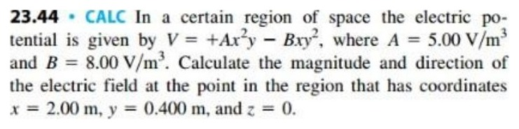
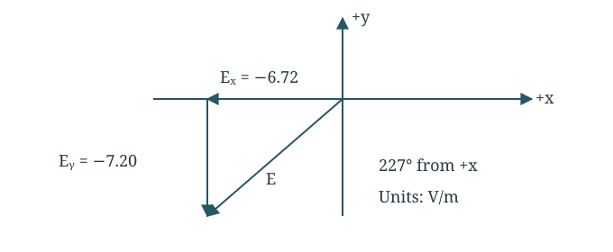
The electric field lies in the xy-plane and points into quadrant III.Differentiate the potential
Use the negative gradient. Hold the other coordinates fixed in each derivative.
Ex=−∂x∂V=−2Axy+By2Ey=−∂y∂V=−Ax2+2Bxy,Ez=0 Substitute the point
Use A = 5.00, B = 8.00, x = 2.00 and y = 0.400 in SI units.
Ex=−2(5.00)(2.00)(0.400)+8.00(0.400)2=−6.72 V/mEy=−5.00(2.00)2+2(8.00)(2.00)(0.400)=−7.20 V/m Find magnitude and direction
Both components are negative, so use quadrant III.
∣E∣=(−6.72)2+(−7.20)2=9.85 V/mθ=180∘+tan−1(7.20/6.72)=227∘ Final answer
E = (−6.72 i − 7.20 j) V/m; 9.85 V/m at 227°.
Both components are negative, so the vector is in quadrant III, not quadrant I.
Question 223.55 · Nonuniform field in a diode
V(x) = Cx^(4/3); cathode x = 0, anode x = d = 0.0130 m; anode voltage 240 V. Find C, E(x), and electron force at x = d/2.
Original question
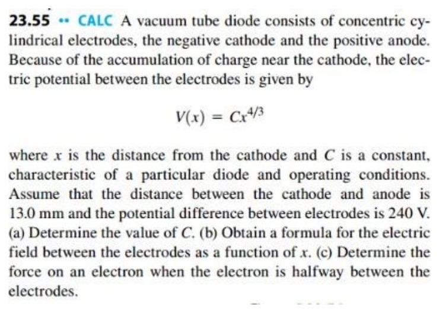
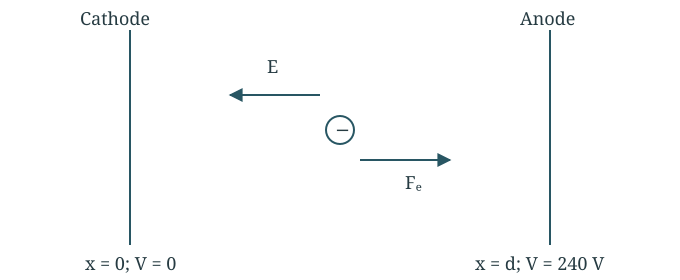
The electric field points toward the cathode. The force on an electron points toward the anode.Find the potential constant
At the anode, x = d and V = 240 V.
240=Cd4/3⇒C=(0.0130)4/3240C=7.85×104 V/m4/3 Find the field function
The potential is not linear in x, so E is not constant.
Ex=−dxdV=−34Cx1/3Ex=−(1.047×105 V/m4/3)x1/3 Find the electron force halfway across
The field points left; the force on a negative electron points right.
x=d/2=0.00650 mEx=−34(7.85×104)(0.00650)1/3=−1.954×104 V/mFx=(−e)Ex=(−1.602×10−19)(−1.954×104)=+3.13×10−15 N Final answer
C = 7.85 × 10⁴ V/m^(4/3); midpoint force +3.13 × 10⁻¹⁵ N.
Field points toward the cathode; the negative electron feels force toward the anode.
Question 323.59 · Hanging charge between plates
A 1.50 g ball with q = +8.90 µC hangs at 30.0° from vertical between plates separated by d = 0.0500 m. Find the potential-difference magnitude.
Original question
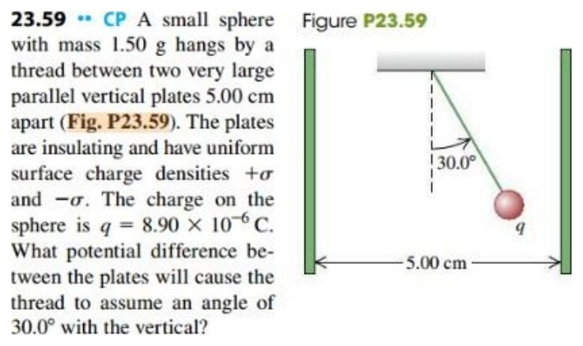
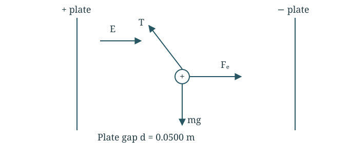
Free-body diagram of the positive ball: electric force follows E; tension and weight balance it.Balance the hanging ball
Resolve tension horizontally and vertically.
Tsinθ=qE,Tcosθ=mgE=qmgtanθ Find the field
Convert mass from grams to kilograms.
E=8.90×10−6(0.00150)(9.80)tan30.0∘=954 N/C Find the plate voltage
The field between the plates is uniform.
∣ΔV∣=Ed=(954)(0.0500)=47.7 V The positive ball deflects along E, toward the lower-potential plate.
Question 424.1 · Vacuum parallel plates
Plate gap d = 2.50 mm; charge magnitude Q = 80.0 nC on each plate; field E = 4.00 × 10⁶ V/m. Find voltage, plate area and capacitance.
Original question
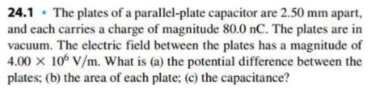
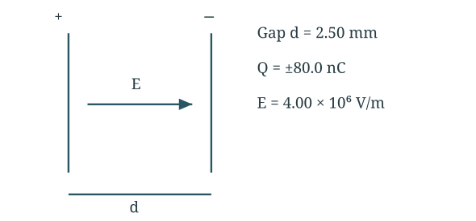
Geometry and directions used below. Schematic, not to scale.Part (a) Find voltage
Convert the plate separation to metres.
V=Ed=(4.00×106)(2.50×10−3)=1.00×104 V Part (b) Find plate area
Use E = σ/ε₀ and σ = Q/A.
A=ε0EQ=(8.854×10−12)(4.00×106)80.0×10−9=2.26×10−3 m2=22.6 cm2 Part (c) Find capacitance
Use the charge magnitude on one plate.
C=VQ=1.00×10480.0×10−9=8.00×10−12 F=8.00 pF Final answer
10.0 kV; 22.6 cm²; 8.00 pF.
C also equals ε₀A/d. Q is the magnitude on one plate, not the sum of magnitudes.
Question 524.3 · Capacitor geometry and field
Air capacitor C = 245 pF, Q = 0.148 µC, separation d = 0.328 mm. Find voltage, area, field magnitude and surface charge density.
Original question
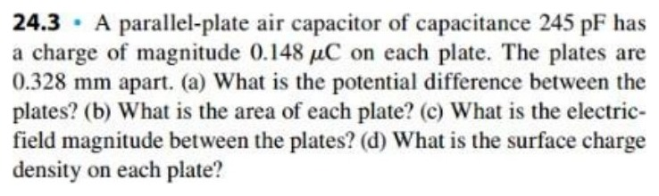
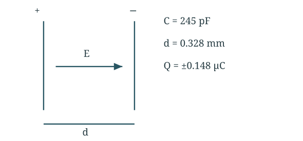
Geometry and directions used below. Schematic, not to scale.Part (a) Find voltage
Use Q = CV.
V=CQ=245×10−120.148×10−6=604 V Part (b) Find plate area
Rearrange the parallel-plate capacitance formula.
A=ε0Cd=8.854×10−12(245×10−12)(0.328×10−3)=9.08×10−3 m2=90.8 cm2 Part (c) Find electric field
Divide voltage by separation.
E=dV=0.328×10−3604=1.84×106 V/m Part (d) Find surface charge density
The two plates have equal and opposite densities.
∣σ∣=AQ=9.08×10−30.148×10−6=1.63×10−5 C/m2 Final answer
604 V; 90.8 cm²; 1.84 × 10⁶ V/m; ±1.63 × 10⁻⁵ C/m².
The two plate densities have opposite signs. Check σ = ε₀E independently.
Question 624.7 · Changing capacitor separation
Air capacitor: Q = 240 pC, V = 42.0 V, plate area A = 6.80 cm². Find gap d, then voltage for the same Q if d doubles.
Original question
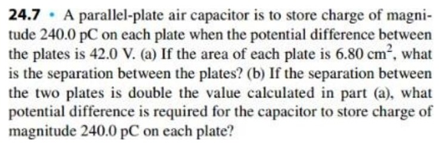
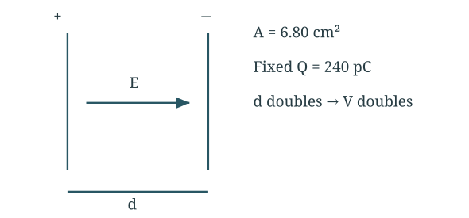
Geometry and directions used below. Schematic, not to scale.Part (a) Find capacitance and separation
Use the initial charge and voltage.
C=VQ=42.0240×10−12=5.714×10−12 Fd=Cε0A=5.714×10−12(8.854×10−12)(6.80×10−4)=1.05×10−3 m=1.05 mm Part (b) Double the separation
Charge stays fixed. Doubling the gap halves capacitance.
C′=2dε0A=2CV′=C′Q=C/2Q=2V=84.0 V Final answer
d = 1.05 mm; new voltage 84.0 V.
The field stays constant because Q/A is unchanged; voltage grows with gap. This question appears in both Homework 6 and 7.